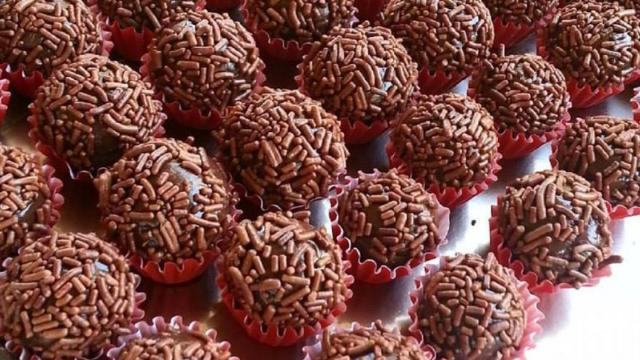

Omelete a la Jabba
Ingredientes:
- 2 ovos
- Sal a gosto
- Pimenta do reino a gosto
- 1 colher de sopa de leite (opcional)
- 1 colher de sopa de manteiga ou óleo
Modo de Preparo:
Em uma tigela, bata os ovos com um garfo até ficarem levemente espumosos. Adicione o sal, a pimenta e o leite (se usar). Aqueça a manteiga ou óleo em uma frigideira antiaderente em fogo médio. Despeje a mistura de ovos na frigideira quente. Cozinhe por cerca de 2-3 minutos de cada lado, ou até dourar e ficar cozido a gosto. Dobre ao meio ou enrole e sirva imediatamente.
Panquecas galáticas
Ingredientes:
- 1 xícara (120g) de farinha de trigo
- 1 colher de sopa (15g) de açúcar
- 2 colheres de chá (10g) de fermento em pó
- 1/2 colher de chá (3g) de sal
- 1 ovo grande
- 1 xícara (240ml) de leite
- 2 colheres de sopa (30g) de manteiga derretida
Modo de Preparo:
Em uma tigela grande, misture a farinha, o açúcar, o fermento e o sal. Em outra tigela, misture o ovo, o leite e a manteiga derretida. Adicione os ingredientes líquidos aos ingredientes secos e misture até incorporar (não misture demais). Aqueça uma chapa ou frigideira levemente untada em fogo médio. Despeje 1/4 de xícara da massa para cada panqueca. Cozinhe por cerca de 2-3 minutos de cada lado, ou até dourar e formar bolhas na superfície. Sirva quente com seus acompanhamentos favoritos.
Macarronada Sith

Ingredientes:
- 500g de macarrão espaguete
- 1 cebola picada
- 2 dentes de alho picados
- 800g de tomates picados (ou 2 latas de tomate picado)
- 1/2 xícara de água
- Sal e pimenta do reino a gosto
- 1/4 xícara de azeite de oliva
- Queijo parmesão ralado a gosto (para servir)
Modo de Preparo:
Cozinhe o macarrão em água fervente com sal de acordo com as instruções da embalagem. Enquanto o macarrão cozinha, prepare o molho. Em uma panela grande, aqueça o azeite de oliva em fogo médio. Adicione a cebola picada e cozinhe até ficar transparente. Adicione o alho picado e cozinhe por mais um minuto. Adicione os tomates picados, a água, o sal e a pimenta do reino. Deixe o molho ferver, depois reduza o fogo e cozinhe por cerca de 15 minutos, mexendo ocasionalmente. Escorra o macarrão cozido e adicione-o à panela com o molho. Misture bem para revestir o macarrão com o molho. Sirva imediatamente com queijo parmesão ralado a gosto.
Brigadeiro Dark Side
Ingredientes:
- 1 lata de leite condensado
- 1 colher de sopa de manteiga sem sal
- 3 colheres de sopa de chocolate em pó
- Chocolate granulado para decorar
Modo de Preparo:
Em uma panela média, adicione o leite condensado, a manteiga e o chocolate em pó. Leve ao fogo baixo e mexa constantemente com uma colher de pau. Continue mexendo até que a mistura desgrude do fundo da panela (cerca de 10-15 minutos). Retire do fogo e transfira a mistura para um prato untado com manteiga. Deixe esfriar completamente em temperatura ambiente. Depois que o brigadeiro estiver frio, unte as mãos com manteiga e enrole em bolinhas. Passe as bolinhas no chocolate granulado e sirva.
Mousse do Palpatine

Ingredientes:
- 1 lata de leite condensado
- 1 caixa de creme de leite (200g)
- 1/2 xícara (chá) de suco de maracujá concentrado
Modo de Preparo:
No liquidificador, bata o leite condensado, o creme de leite e o suco de maracujá até obter um creme homogêneo. Despeje a mistura em taças ou em um refratário e leve à geladeira por pelo menos 2 horas antes de servir. Decore com sementes de maracujá antes de servir, se desejar.
Pão de Queijo Darth Vader

Ingredientes:
- 1 xícara (chá) de leite integral
- 1/2 xícara (chá) de óleo
- 1 colher (chá) de sal
- 2 xícaras (chá) de polvilho doce
- 2 ovos
Modo de Preparo:
Em uma panela, coloque o leite, o óleo e o sal e leve ao fogo médio até ferver. Retire do fogo e adicione o polvilho de uma só vez, mexendo bem até obter uma massa lisa e homogênea. Adicione os ovos, um a um, incorporando bem à massa após cada adição. Pré-aqueça o forno a 200 °C. Unte e enfarinhe uma forma para muffins ou pão de queijo. Com auxílio de uma colher, distribua a massa nas forminhas, preenchendo-as até ¾ da capacidade. Leve ao forno por cerca de 30 minutos ou até dourar. Sirva quente.